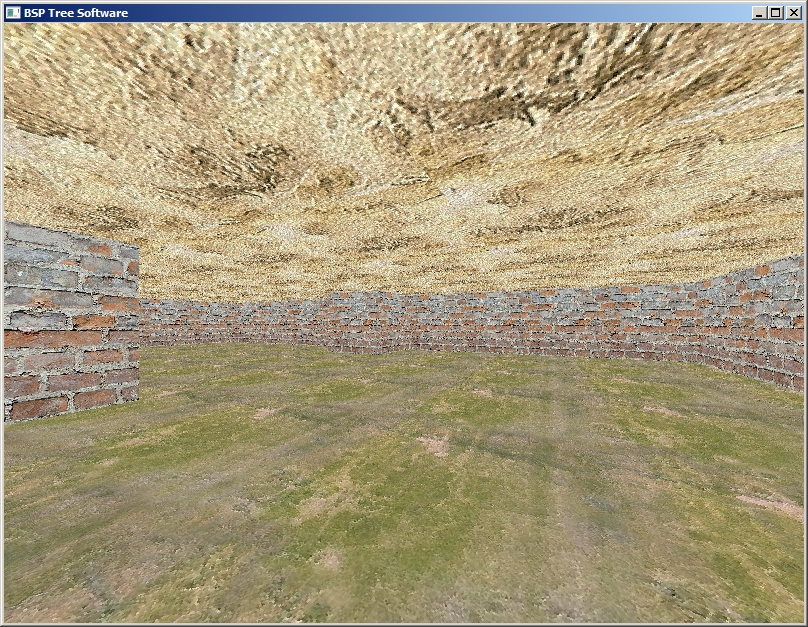
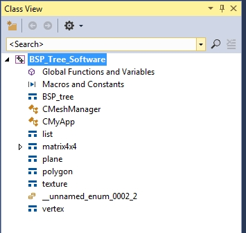
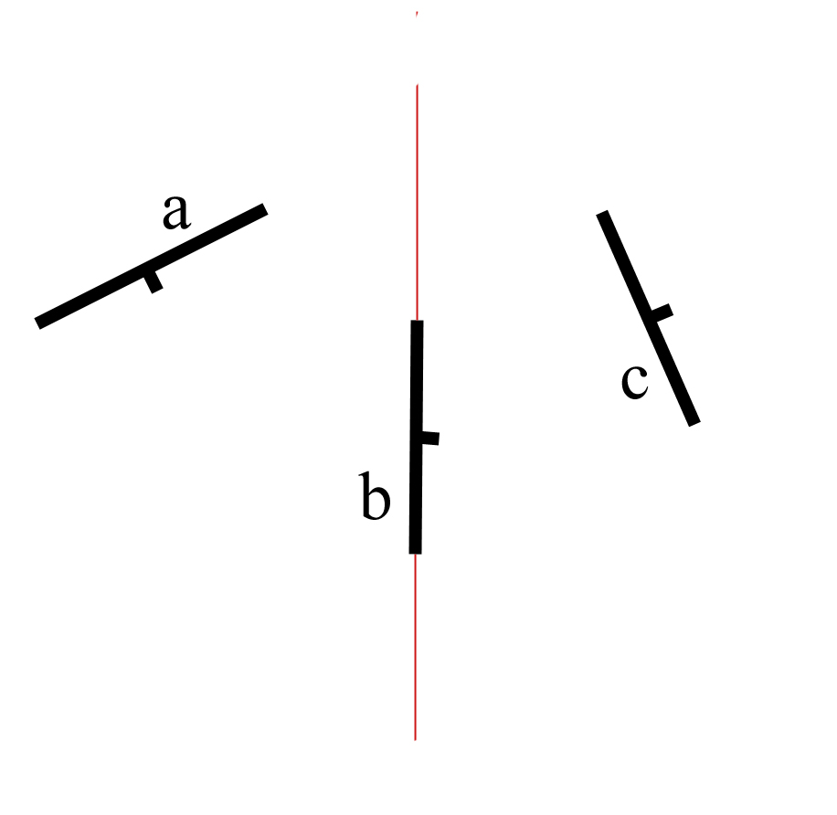
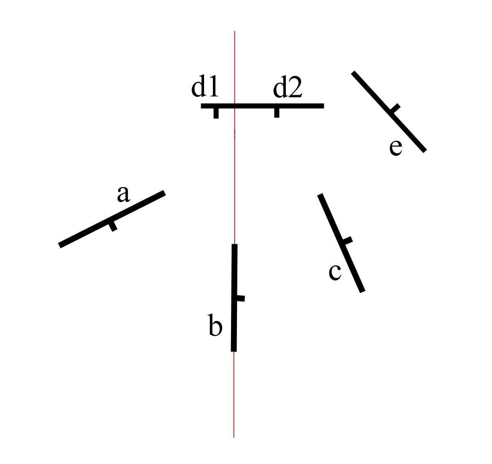
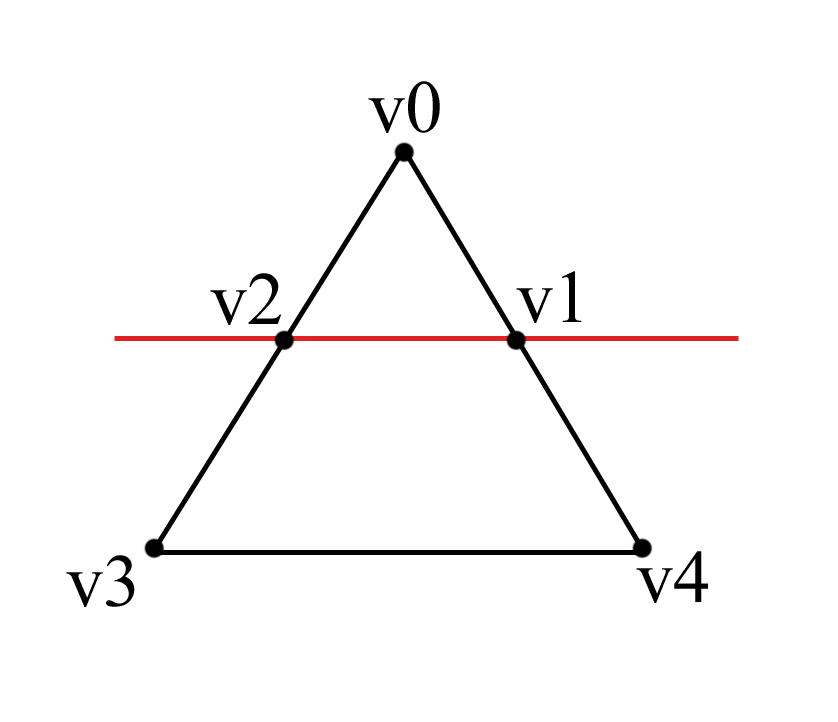

Загрузить архив с примерами ЗДЕСЬ.
При использовании BSP дерева Z буфер или сортировка полигонов по глубине не нужна.
Почему называется BSP дерево? BSP это сокращение от Binary Space Partitioning, двоичное разбиение простанства. Почему двоичное? У нас есть один набор полигонов, которые составляют модель сцены и мы из него делаем два набора полигонов. Как? К примеру мы берем первый полигон в списке и разбиваем пространство при помощи плоскости этого полигона. В результате у нас получается два набора полигонов- те что спереди, и те что за плоскостью этого полигона. Поэтому двоичное разбиение пространства. Далее мы берем первый в списке получившихся передних полигонов и делаем его секущим, разбиваем относительно него пространство, и теперь из списка передних полигонов получилось снова два списке- те что с переди и те что за плоскостью. Так же поступаем и первым списком полигонов которые лежат за плоскостью. И так далее рекурсивно.
В данном примере мы рассмотрим создание и отображение BSP дерева, near plane clipping, frustum culling, backface culling, software triangle rasterization. Код примера можно загрузить /src/03.010-bsp_soft/BSP_Tree_Software.
После запуска примера перемещатся по сцене можно с помощью клавиш W,S,A,D и поворачивать камеру мышей.
Данный проект BSP дерева разработан на VS2015. Сначала рассмотрим какие классы и структуры входят в состав проекта в ClassView.
Просматривать демо- проект следует в таком порядке. Сначала нужно найти функцию CMyApp::InitScene() в этом классе CMyApp создается главное окно приложения, с этого класса начинается вся работа программы. Затем в этой функции CMyApp::InitScene() в конце идет вызов MeshManager.Init_MeshManager(); то есть вызывается функция CMeshManager::Init_MeshManager() эта функция загружает в массив все треугольники (полигоны) сцены и в конце своей работы эта функция вызывает функцию создания BSP дерева Build_BSP_Tree(root, polygons); Затем в том же классе CMyApp есть функция CMyApp::RenderScene() она вызывает функцию отображения BSP дерева MeshManager.Draw_Mesh(vPos); причем в классе CMyApp объявлено CMeshManager MeshManager;
Идея BSP дерева следующая. Мы загружаем полигоны сцены или модели, подаем эти полигоны нв вход функции для создания BSP дерева, после создания BSP дерева его можно отобразить на экране- то есть нарисовать модель или сцену, вывести на экран эти полигоны.
Работа с BSP деревом состоит из следующих функций.
Binary Space Partitions это сокращенно BSP, и переводится как двоичное разбиение пространства. Как работает BSP дерево?
Причем мы строим дерево в целом перед всем рендерингом, не в каждом кадре. То есть мы не строим-рендерим, строим-рендерим и т.д. Нет. В начале запуска программы в функции инициализации мы строим дерево раз, и потом пользуемся им на протяжении всей работы программы.
Давайте посмотрим на рисунок ниже.
Предположим у нас на сцене (см.рисунок выше, вид сцены сверху) есть три полигона, лучше сказать треугольника - a,b,c. Короткие черточки на каждом полигоне обозначают нормаль. Полигон b мы выбираем секущим. Таким образом полигон b разбивает пространство сцены на два полупространства - это красная тонкая линия. В левой области полупростраства находится полигон a, в правой области полупространства находится полигон c. Поэтому и называется двоичное разбиение пространства- пространство разбивается полигоном на две части. Полигон b мы выбрали секущим.
Тут сразу встает несколько вопросов. Первое- как из полигона b получить плоскость, которая будет разбивать пространство? Как определить полигон a находится перед секущей плоскостью или за плоскостью? Так же и полигон c - определить находится перед секущей плоскостью или за?
Для начала нужно из полигона (трегольника) b получить плоскость. Потом выяснить, остальные полигоны a и c находятся перед плоскостью или за плоскостью, и добавить их в список front_list и back_list.
Структура С++ которая будет хранить один узел BSP дерева выглядит так.
struct BSP_tree
{
plane partition;
list polygons;
BSP_tree *front,
*back;
};
Дальше идет прото математика. Из полигона b мы получаем плоскость при помощи функции Get_Plane() из структуры polygon, функция на входе принимает полигон, возвращает плоскость.
plane polygon::Get_Plane();
Теперь у нас есть секущая плоскость plane. Далее мы должны определить полигон a и c находятся спереди плоскости, или сзади плоскости? (Далее будет вариант полигон пересекается с плоскостью и его нужно будет разбить на два полигона). Фукнция Classify_Polygon (polygon *poly) из структуры плоскости plane принимает на входе полигон (полигон a и c) и возвращает результат- где находится полигон, спереди плоскости, за плоскостью или совпадает с плоскостью.
int plane::Classify_Polygon (polygon *poly)
Если функция Classify_Polygon (polygon *poly) вернула результат что полигон совпадает с секущей плоскостью, то этот полигон добавляется в структуру BSP_tree в список list polygons; если за плоскостью то добавляется в список back_list, если перед плоскостью добавляется в список front_list - эту информацию хранит часть структуры BSP_tree *front, *back; Если полигон (треугольник) рассекается плоскостью, мы должны вызывать функцию которая рассекает полигон на два, и потом добавить результирующие полигоны в front_list и back_list. Об этом будет рассказано позже, разбивает полигон на два функция void CMeshManager::Split_Polygon():
void CMeshManager::Split_Polygon(polygon *poly, plane *part, polygon *&front, polygon *&back, int &cf, int &cb);
Функция Split_Polygon() получает на входе полигон который нужно разбить на два, получает секущую плоскость, и возвращает значения front, back, и количество треугольников сf для front и cb для back. К примеру после разбиения, вызова функции Split_Polygon() мы получили из входного полигона:
cf = 1; cb = 2; //один треугольник спереди плоскости front_list.Add_To_List (&front_piece[0]); //два треугольника за сплоскостью back_list.Add_To_List (&back_piece[0]); back_list.Add_To_List (&back_piece[1]);
После того как мы загрузили модель сцены в программу, и у нас есть набор полигонов (треугольников) из которых состоит сцена, нужно вызвать функцию Build_BSP_Tree(). Весь процесс работы с BSP деревом заключен в классе CMeshManager в демо программе. Начало работы в функции Init_MeshManager(). В этой функции мы загрузили модель сцены, и получили набор треугольников. В конце этой функции мы начинаем процесс создания BSP дерева:
void CMeshManager::Init_MeshManager()
{
//загружаем модель сцены
//создаем BSP дерево на основе набора треугольников сцены
root = new BSP_tree;
Build_BSP_Tree(root, polygons); // Build the BSP tree from the root node
}
Теперь давайте рассмотрим пример по сложнее. На рисунке ниже секущая плоскость разбивает полигон d на два полигона d1 и d2.
Теперь у нас есть так же два набора полигонов. back_list это будет a,d1 и front_list будет c,d2,e.
Разбиение происходит в функции void CMeshManager::Split_Polygon(). Как уже говорилось функция принимает на входе полигон (треугольник) который нужно разбить на два, и секущую плоскость. В результате работы функция возваращает массив треугольников для передних полигонов и задних.
После того как внутри функции Split_Polygon() треугольник разбит на два, в итоге мы получаем два набора вершин- для передней части (та часть треугольника которая спереди плоскости) и для задней части (та часть треугольника которая сзади плоскости). Причем мы получаем в одном из случаев 3 вершины- это значит один треугольник, или 4 вершины - это значит два треугольника. Давайте посмотрим на рисунок ниже.
Секущая плоскость (красная линия) разбивает треугольник, мы получаем часть треугольника (предположим) перед плоскостью V0, V2, V1, и получаем часть треугольника за плоскостью V2, V1, V4, V3 (обход вершин по часовой стрелке). Причем перед плоскостью у нас уже есть готовый треугольник V0, V2, V1, а за плоскостью у нас есть полигон с четырмя точками, и из него мы получим два треугольника. Первый треугольник V3, V2, V1 и второй треугольник V3, V1, V4. Этим в конце занимается функция Split_Polygon(). После разбиения треугольника мы получаем именно такой набор вершин. И функция Split_Polygon() возваращает уже готовые треугольники, переменные cf и cb сообщают сколько треугольников спереди плоскости и сколько сзади.
Кому интересно рассмотреть алгоритм работы функции Split_Polygon() я рекомендую создать один тестовый треугольник скажем в центре координат, создать плоскость, и отладчиком пройтись по коду функции выяснить каким образом происходит разбиение одного треугольника на два.
После того как мы получили два набора полигонов, после разбиения сцены секущей плоскостью, мы берем отдельно front_list и back_list - берем из этих списков первый полигон в списке, создаем для этого полигона секущую плоскость, и для остальных полигонов в списке front_list и back_list создаем так же front_list и back_list список на базе секущей плоскости, это происходит рекурсивно в конце функции Build_BSP_Tree(). Как это просиходит, функция Build_BSP_Tree() вызывается рекурсивно, и при следующем вызове созданный ранее front_list разбивается на два новых front_list и back_list, также созданный ранее back_list разбивается на два новых front_list и back_list, и так далее.
void CMeshManager::Build_BSP_Tree(BSP_tree *tree, list polygons)
{
//берем полигон из списка
//выясняем как остальные полигоны ориентированы
//и заполняем front_list и back_list
//далее рекурсивно вызываем Build_BSP_Tree
//и для каждого списка front_list, back_list
//создаем front_list и back_list
//функция вызывается рекурсивно пока не закончатся полигоны
if (!front_list.Is_Empty_List())
{
tree->front = new BSP_tree;
Build_BSP_Tree (tree->front, front_list);
}
if ( ! back_list.Is_Empty_List ())
{
tree->back = new BSP_tree;
Build_BSP_Tree (tree->back, back_list);
}
}
Так же следует помнить что нормали к проскостям - передняя, задняя, левая правая, верхняя нижняя прскость отсечения определены в мировых координатах. Плоскости из объема просмотра мы извлекаем в функции void CMeshManager::Extract_Frustum().